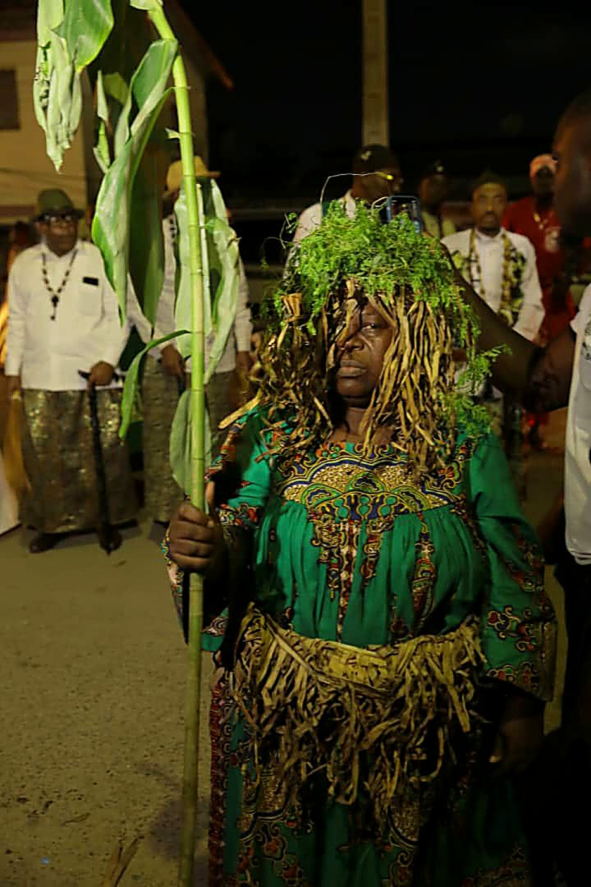

Origins of the Canton
Malimba Canton as it stands today is the heir to a great territorial community that endured many trials — glorious in trade and economy during the pre-colonial period, notably during the 1892 Germano-Malimba war, led by figures such as Moukoko Manyanye and Éboué Etongo. From the mid-20th century, the territory, then led by H.M. Ngombe Dikanda (also Edéa's first mayor), formed a single continuous space from the mouth of the Sanaga to the present-day town of Edéa, covering Mouanko and Dizangue.
The creation of the Mouanko and later Dizangue districts split this vast territory into two distinct cantons: Malimba Edéa, today led by H.M. Me Matanda Eugène Jacques — the sole Malimba representative officially seated at the Ngondo — and Malimba Océan, in the Mouanko district, currently led by H.M. Nanga III Symphorien. The four great founding families — Bongo, Mulimbe Mbengue, Mulimbe Jedu and Mulongo — are all represented. A unique culinary and cultural trait unites the Malimba: the fishing and consumption of clams, known as behona in Malimba, besona in Duala, or bisonda in Bakoko/Bassa — a gastronomic emblem as much as an identity marker.
🦪 Behona — Local Specialty
The Superior Chief
The Ngondo in Pictures

